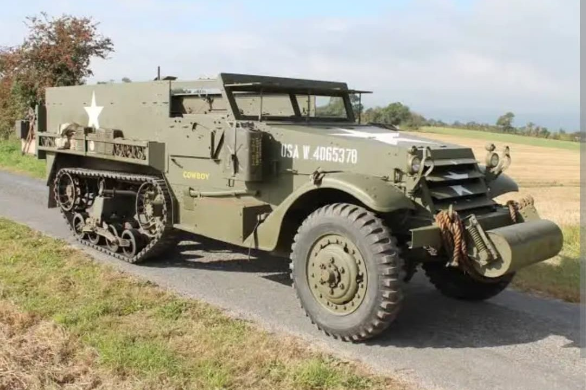
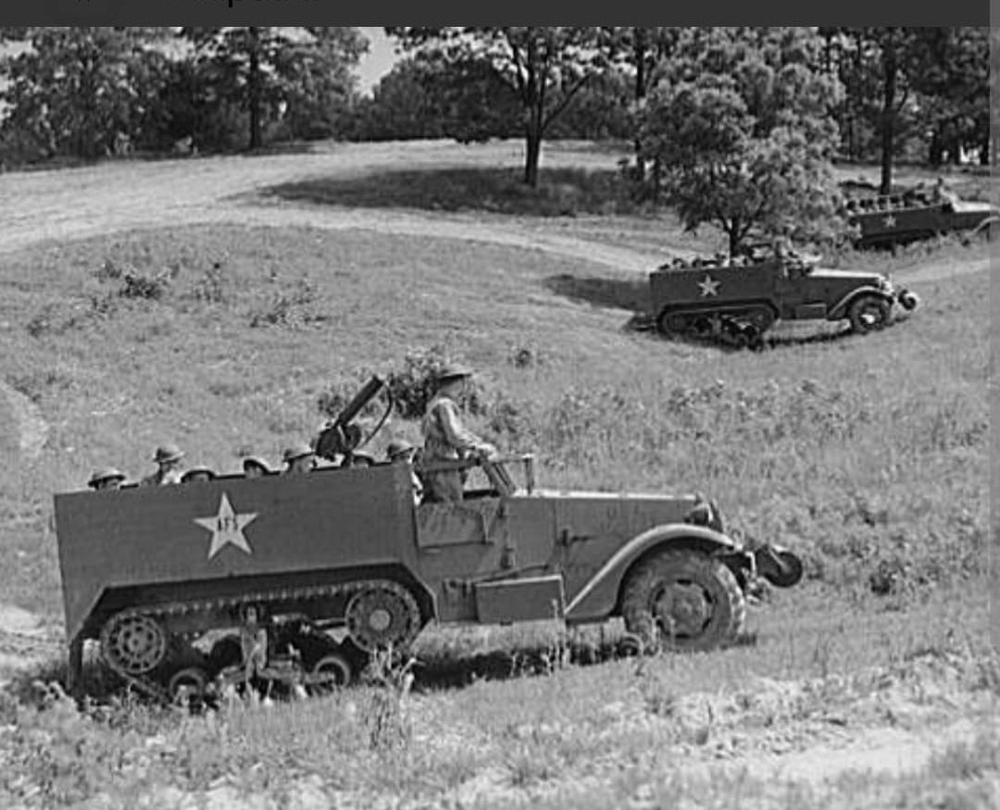
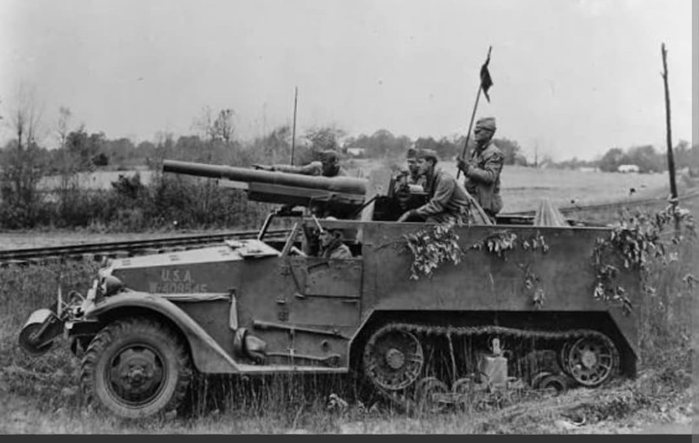

Le transport de troupes mécanisé tout-terrain de référence des divisions blindées alliées

Le Half-Track M3 (et sa variante M2) est l'autochenille blindée emblématique déployée à grande échelle par les forces armées des États-Unis et leurs alliés au cours de la Seconde Guerre mondiale.
Conçu pour offrir une mobilité tactique élevée à l'infanterie blindée, il permettait d'accompagner les colonnes de char M4 Sherman sur le champ de bataille tout en protégeant les soldats des tirs d'armes légères et des éclats d'obus.
Développé par la **White Motor Company** (aux côtés d'Autocar et de Diamond T), le Half-Track M3 combine un train avant à roues directrices et un train arrière à chenilles en caoutchouc armé d'acier. Il était propulsé par un moteur 6-cylindres en ligne White 160AX à essence de 147 chevaux.
D'une masse de **9 tonnes**, le M3 pouvait transporter **13 soldats équipés** (un conducteur et 12 passagers) à une vitesse maximale de 72 km/h sur route. Son blindage léger en acier cémenté variant de 6 à 12 mm assurait une protection efficace contre la mitraille, tandis qu'un rouleau métallique frontal aidait au franchissement des fossés.

Baptisé au feu en Afrique du Nord lors de l'Opération Torch en 1942, le Half-Track M3 devint rapidement indispensable lors de la campagne d'Italie, de la libération de la France et de la traversée de l'Allemagne.
Son châssis extrêmement modulaire donna naissance à une vaste famille de véhicules spécialisés :

Produit à plus de **53 000 exemplaires** toutes variantes confondues (y compris les versions M5 et M9 produites par International Harvester pour le Prêt-Bail), le Half-Track M3 est l'un des véhicules blindés les plus fabriqués de l'histoire.
Il a équipé l'US Army, les forces britanniques, la France Libre (notamment la 2e DB du général Leclerc) ainsi que l'Armée rouge. Après 1945, il est resté en service dans de nombreuses armées à travers le monde pendant plusieurs décennies.
Page du Musée HOP WW2 – Section Véhicules Terrestres Américains